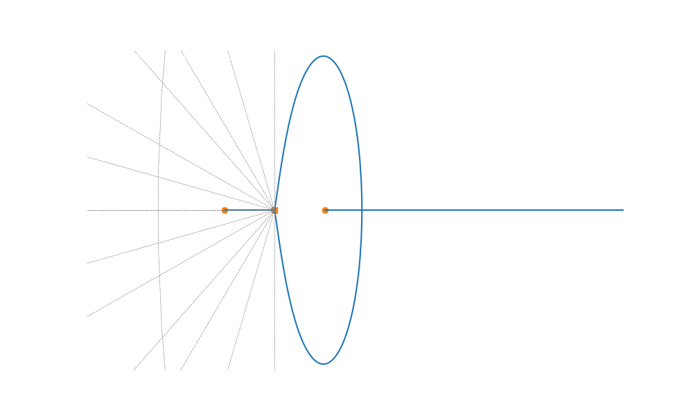

Servomecanismo
Projeto
Final
Análise e Controle de Sistemas Dinâmicos
Análise do Modelo
Matrizes de Estado e Função de Transferência
Forma Canônica Controlável
$$ A = \begin{bmatrix} 0 & 1 & 0 \\ 0 & 0 & 1 \\ 0 & -12540 & -963.2 \end{bmatrix} $$
$$ B = \begin{bmatrix} 0 \\ 0 \\ 1 \end{bmatrix} $$
$$ C = \begin{bmatrix} 849.2 & 0 & 0 \end{bmatrix} $$
Função de Transferência
$$ G(s) = \frac{849.2}{s(s^2 + 963.2s + 12540)} $$
Mapa de Polos
Estabilidade e Controlabilidade

Localização dos Polos
- 1 Polo na Origem ($s=0$)
- 2 Polos Reais Negativos (Estáveis)
Controlabilidade
O sistema é totalmente controlável ($Rank(C) = 3$). A tensão de entrada pode levar os estados a qualquer valor em tempo finito.
Validação em Malha Aberta
Resposta ao Degrau
Comportamento Integrador
A saída cresce linearmente (rampa) para uma entrada constante.
Isso valida matematicamente a presença do polo na origem ($1/s$), confirmando que o
sistema é do Tipo 1.
Interpretação Física
Significado dos Polos
Polo na Origem
Atua como um Integrador Puro.
Isso classifica o sistema como Tipo 1, garantindo erro zero de posição em
malha fechada.
Polo Mecânico (-13.2)
É o Polo Dominante.
Com uma constante de tempo $\tau_m \approx 75.7ms$, ele governa a inércia e a resposta
transitória.
Polo Elétrico (-950)
Dinâmica extremamente rápida ($\tau_e \approx 1.05ms$).
Impacta a estabilidade relativa em altas frequências.
Controlador Proporcional
Conceito e Locus das Raízes
Lei de Controle
$$ u(t) = K_p \cdot e(t) $$
Aumentar o ganho $K_p$ "endurece" o sistema, reduzindo o tempo de resposta, mas ao custo de reduzir o amortecimento.
Análise de Estabilidade
- Sistema estável para todo $K > 0$.
- Ganho elevado $\to$ Polos complexos conjugados.
- Trade-off clássico: Velocidade vs. Overshoot.
Resultados Proporcional
Definição do Ganho $K_p = 5.0$
Por que $K_p \approx 138$?
Muito lento. Erro dinâmico grande durante transitório.
Equilíbrio ideal. Atende $t_s \approx 0.5s$ e Overshoot $\approx 10\%$.
Oscilação excessiva e perigosa para a mecânica.
Compensador Lead (Avanço)
Melhorando o Regime Transitório
Objetivo
Adicionar fase positiva ao sistema para puxar o Root Locus para a esquerda.
- Aumenta a Rapidez ($t_s \downarrow$)
- Aumenta a Largura de Banda
- Melhora o Amortecimento
Compensador Lag (Atraso)
Precisão em Regime Permanente
Estratégia
Aumentar o ganho DC sem alterar significativamente a resposta transitória (raízes dominantes).
z > p (Atenuação de Alta Freq.)
Otimização de Parâmetros
Busca Computacional da Solução Ideal
for a in a_values: [0.01, ..., 5.0] b = 10 * a for K in K_values: # Simula Step Response Mp = calc_overshoot(y) ts = calc_settling_time(y) ess_ramp = 1 / (K * 0.677) if (5 <= Mp <= 15 and 0.5 <= ts <= 1.0 and ess_ramp <= 0.01): resultados.append((a, b, K))
*O algoritmo testou milhares de combinações para garantir conformidade simultânea com 4 critérios rigorosos.
Solução Encontrada
Validação das Especificações
- Overshoot 12.77% (5-15%)
- Tempo de Acomodação 0.51s (0.5-1.0s)
- Erro de Rampa ~0.7% (< 1.0%)
Análise Frequencial
Diagrama de Bode e Lugar das Raízes
Diagrama de Bode
Lugar das Raízes
Controlador PID
Sintonia e Robustez
Sintonia Ziegler-Nichols
Método empírico de malha fechada. Encontram-se os ganhos críticos ($K_{cr}$, $P_{cr}$) que levam à oscilação sustentada para calibrar $K_p, T_i, T_d$.
Análise de Robustez
O projeto garante Margens de Ganho e Fase adequadas para suportar variações paramétricas (ex: aquecimento do motor alterando $R_a$ ou $K_m$ em $\pm 20\%$).
Comparativo de Desempenho
| Controlador | Subida ($T_r$) | Overshoot | Erro Estacionário | Avaliação |
|---|---|---|---|---|
| Proporcional (P) | Médio | Alto | Baixo | Simples, mas oscilatório |
| Lead | Rápido | Médio | - | Melhor Transiente |
| PID | Ajustável | Baixo | Zero | Mais Robusto |
Conclusão
"A aplicação de controle avançado transformou um sistema mecanicamente lento (inercial) em um servomecanismo de alta precisão e resposta rápida."